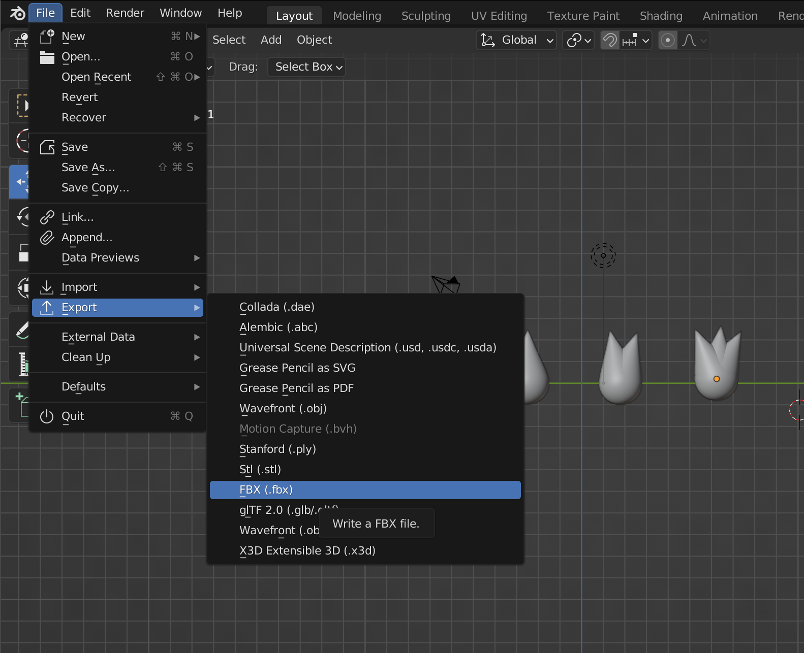
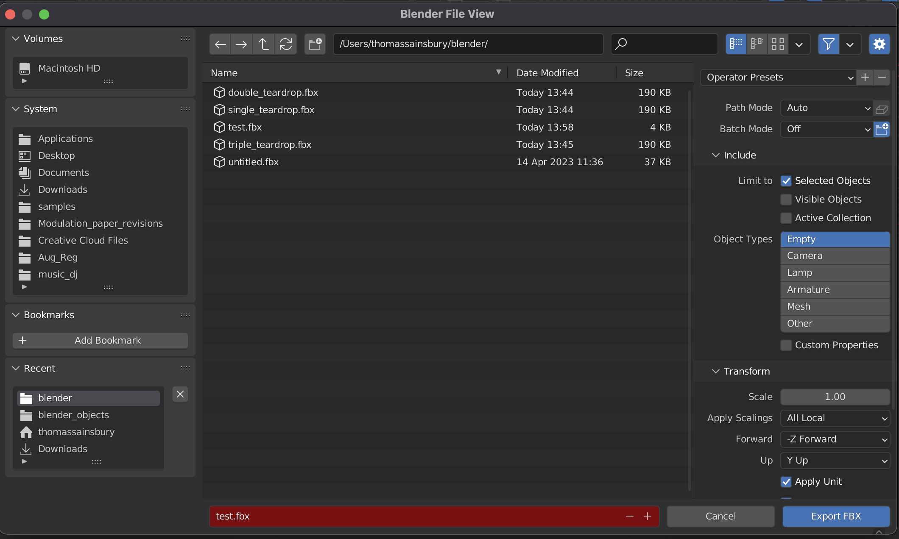
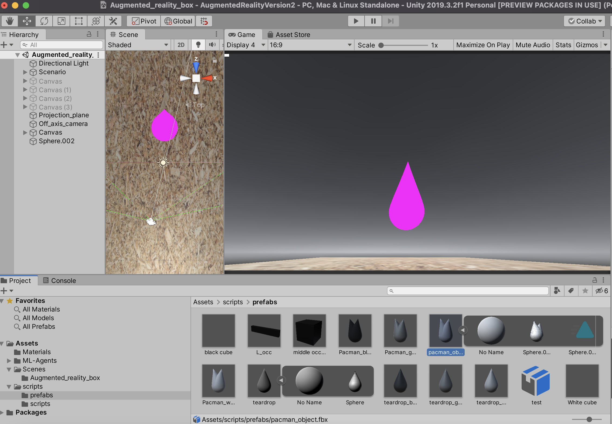
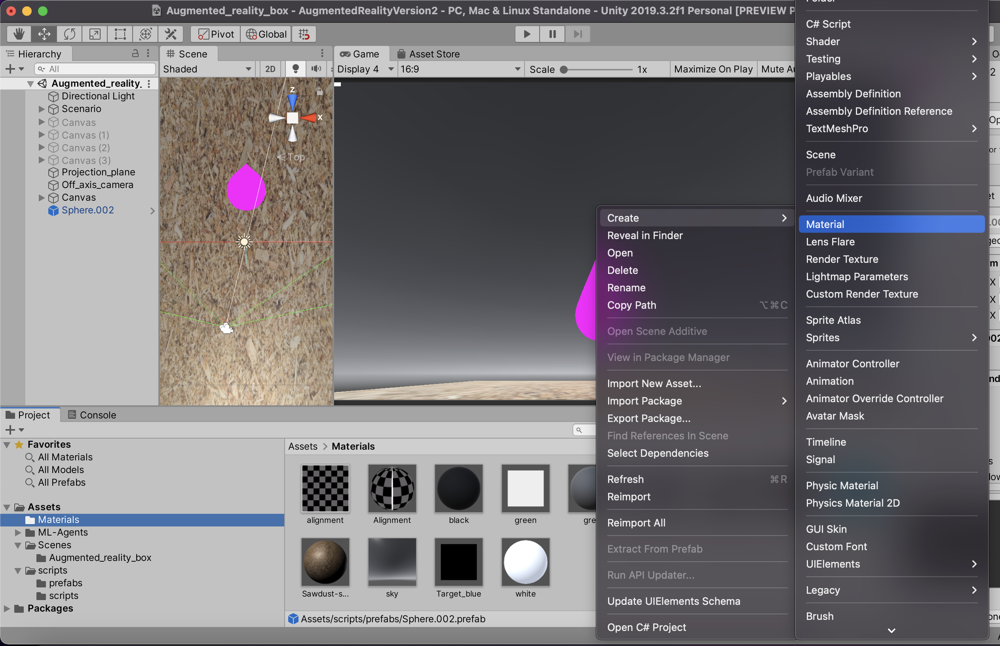
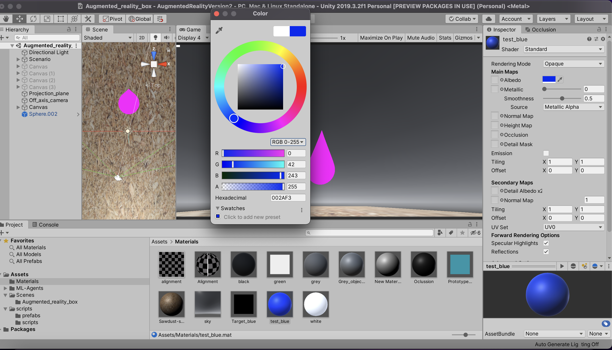
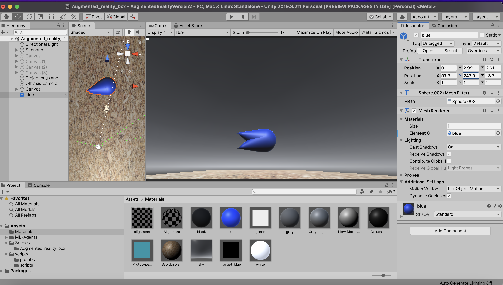
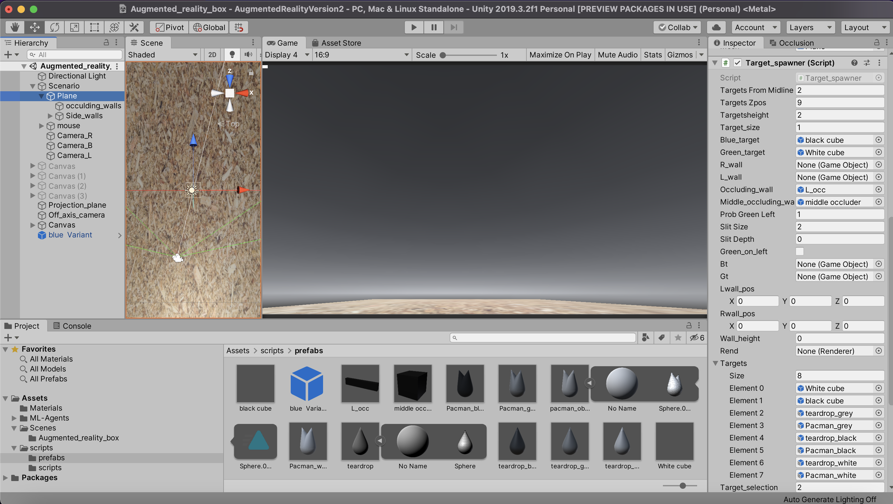
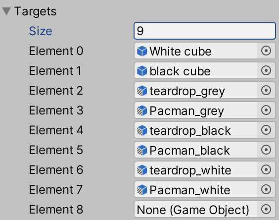

Adding new target objects#
This page describes how to add new targets and distractor objects to the unity game such as the tear drop and the white pacman below.

Sculpting objects in Blender#
To create new objects, or to edit the shape of existing objects, you will need to use Blender:
To install Blender visit their website.
Useful resources on how to use Blender:
Details on how to make and sculpt objects can be found in this youtube tutorial.
This tutorial was useful for creating the original tear drop.
When saving objects from Blender to use in Unity you want to export the selected object as a
.FBX format. This is a format that is also readable by Unity. To do this you want to follow these steps:File>>Export>>Fbx.

Make sure you tick
Selected Objectsonly and click onExport FBX.

{kind=link}
{kind=link}
ℹ️ If you have any issues with this, you can find more detailed steps alongside an explanation of the different save options here.
Importing the file into Unity#
To import the object into Unity
Open the Unity editor.
Click on the
asset taband thenimport assetand find the.fbxfile that you want to import.Once imported the object will appear in the editor. Put the object into the prefab folder in the unity project. You should see that this object has a little play button on it. If you click on this play button the object will unravel and reveal multiple objects. We only want the object that looks like a “mesh” so drag this into the game and it should appear as a pink object - the reason that the object is pink is because it has no material attached to it.

{kind=link}
Adding a material#
To create a new material:
Click on the materials folder in the asset folder of the project tab.
Right click on a spare space within this
folder>>Create>>Material.
Give the material a name, i.e.
blue.Click on it to get the inspector window for that object to pop up. Then you can click on the color picker and change the color of the material. In this case I have gone for a blue.

Drag an drop the material onto the object we just imported and it will turn it to the color of the material.

Drag this colored object into the prefab folder so that we can programmatically spawn it (rather than it always being present in the game!). And give it a clear name.
{kind=link}
{kind=link}
{kind=link}
Adding the object to the list of targets and distractors#
To add this newly made object to the list of objects that are used in the game:
In the hierarchy window, select
scenario>>plane. This will open the inspector window for the plane object on the right hand side of the screen.
Scroll down in this window until you find the
target spawnerscript.Scroll down some more and you will see a field called
Targets. ThisTargetsobject is a list of individual game objects which can be spawned in the game. To add a new object increase thesizeparameter by 1 and then you will see an empty slot appear (it will sayNone (Game Object)). You can simply drag an drop the object that you recently imported onto this slot.
{kind=link}
{kind=link}
You just created a new target! 💫 The object can then be selected when running the Vr4mice game by changing either the Target_selection or Distractor_selection parameters in the python GUI with the number used corresponding to the index within the Targets list.
Now, to make the object available for all users (and your future self), you can follow Update the AugmentedReality game to push the changes on the GitHub repo.